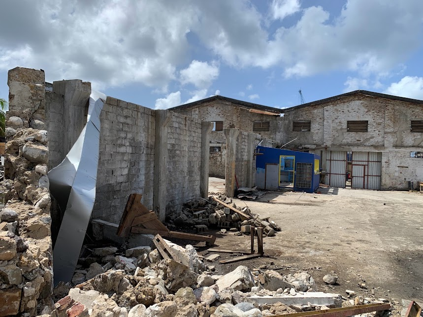
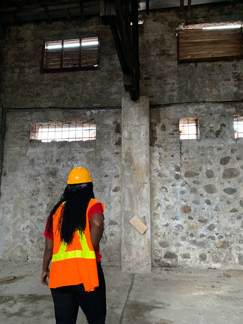

Hotel & commercial building demolition
DL dismantles substantial structures and can coordinate the supporting operations needed for redevelopment or the next construction phase.
Major demolition · Saint Lucia
DL Equipment and Aggregates Ltd carries out substantial building demolition across Saint Lucia. Heavy equipment, experienced operators, trucking and fleet support are coordinated through one local operation.
A core DL capability
DL is a commercial demolition contractor serving hotel owners, developers and principal contractors across Saint Lucia.
We can lead the demolition directly or join a wider construction programme as the demolition specialist. We match the excavators, operators and trucks to the structure, site access and surrounding conditions, and agree what needs to be cleared for the next phase.
See our work at Rex St. Lucian hotel and Queenslane for examples of structural demolition and site clearance.

Demolition arrangements are developed around the structure, access and next use of the site.
Scope of service
DL dismantles substantial structures and can coordinate the supporting operations needed for redevelopment or the next construction phase.
Excavators and supporting plant selected around the scale, access and working conditions of the site.
DL's trucking capability can support the loading and movement of demolished material where included in the agreed project scope.
Clearance and supporting earthworks can be coordinated to prepare the site for the next agreed phase of development.
How the work is shaped
Before work begins, DL needs to understand the structure, surrounding conditions, access, programme and the condition in which the client needs the site handed over.
Confirm the location, structure, access, project timing, known constraints and required end condition.
Match the equipment, operators, working sequence, trucking and supporting resources to the job.
Mobilise the agreed plant and team, then execute the demolition scope in coordination with the wider site programme.
Complete the agreed loading, haulage, clearance or supporting site work ready for the next project phase.
Operating depth
Demolition depends on more than the machine at the face of the building. It depends on keeping equipment working, coordinating movement and responding to site conditions.
DL's wider operation includes excavators across different size classes, a bulldozer, 20-tonne dump trucks, smaller trucks, trailer trucks, lowboys and flatbeds. This allows the company to plan demolition alongside equipment movement, trucking and site support.
An in-house garage—with mechanics, electricians, welders and body technicians—supports the fleet from within the business. That technical base is part of how DL prepares for demanding work.
Review DL's equipment capability
Flexible project role
Planning an enquiry
Early information helps the operations team understand the likely scope and arrange the right follow-up.
Share the project location, type and approximate size of the structure, available access, desired timing and what the site should be ready for after demolition. Plans and photographs are useful where available.
Yes. DL can undertake the demolition scope directly or work as the demolition and equipment partner within a larger construction team.
Yes. DL has site-clearing and trucking capability. The exact loading, movement and clearance requirements should be identified when the project scope is reviewed.
Yes. Major demolition is a core DL service, and the company has experience demolishing substantial commercial and hotel structures.
DL serves projects across Saint Lucia.
Start with the structure and the site
Share the location, structure, access and target programme. DL will review the demolition requirement and discuss the equipment, haulage and supporting work the project may need.